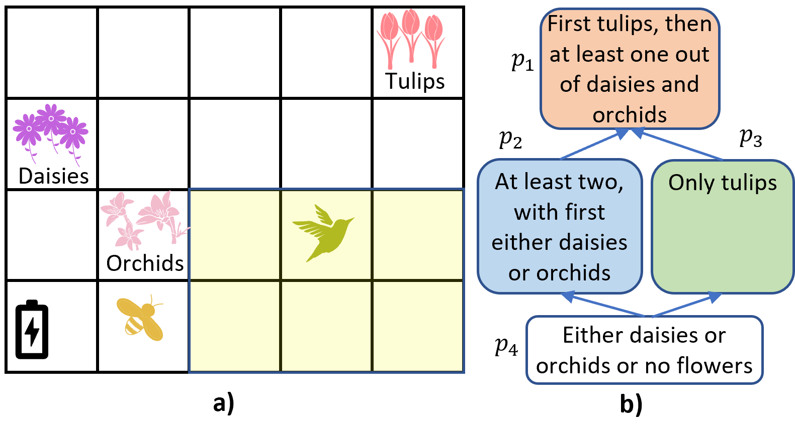
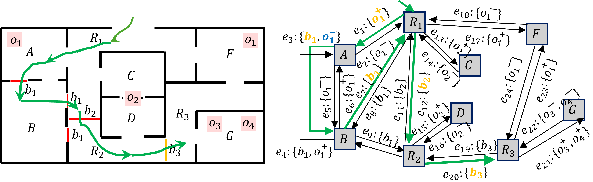
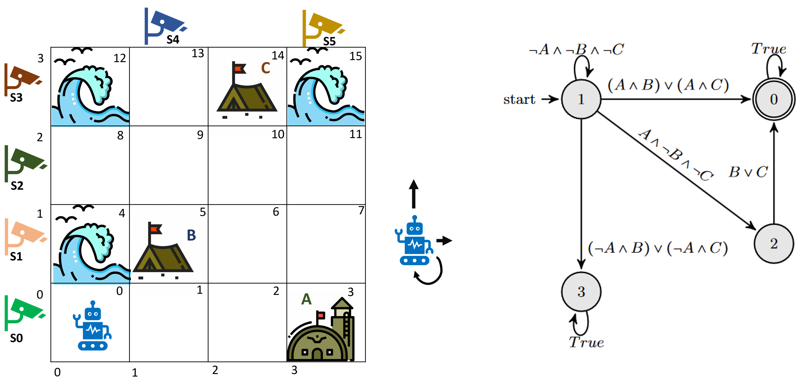
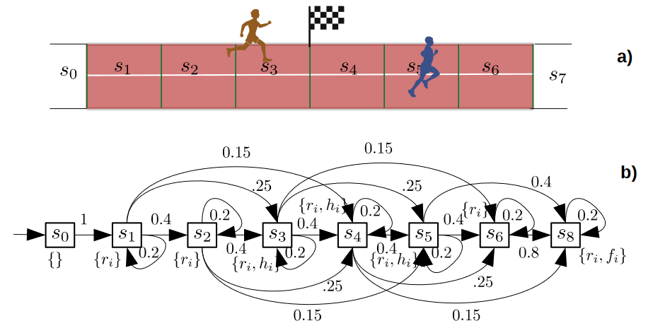
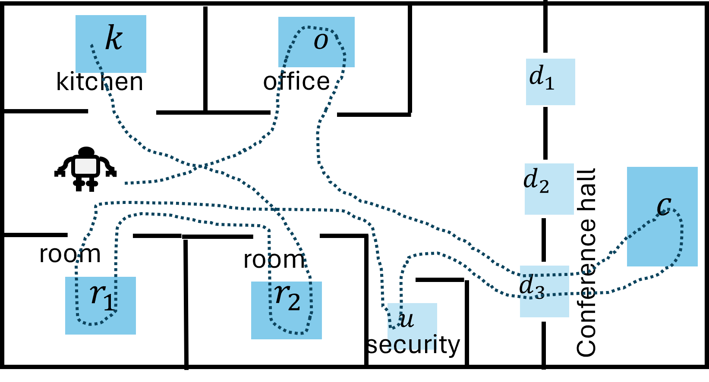
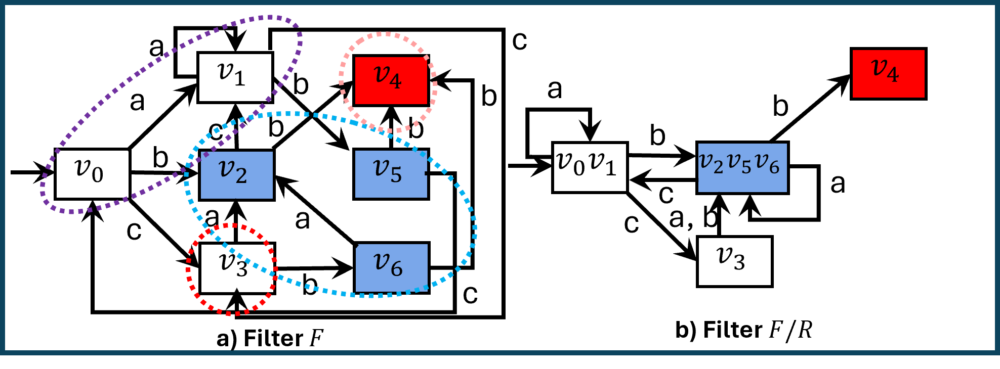

Contact
Cheek Hall #134
825 S National Ave
Springfield, MO 65897
Emails: hrahmani@missouristate.edu
Welcome to my webpage!
Biography:
I am an assistant professor (tenure track) in the Computer Science Department at the Missouri State University. I recieved my B.Sc. degree in Computer Engeering (Software) from the Iran University of Science and Technology, Iran, and my M.Sc. degree in Computer Science from the Sharif University of Science and Technology, Iran. I completed my P.hD. at the the University of South Carolina in 2022 under the supervision of Prof.Jason O'Kane. Then, I worked as a Postdoctoral Associate in Dr. Jie Fu's lab at the University of Florida for two years. My research focuses on developing theories and algorithms for planning and decision-making in robotics and intelligent systems.Teaching:
- CSC 611 Algorithms and Advanced Data Structures
- CSC 590+CSC 690 Data Analytics
Publications:
-
Journal Articles
- Hazhar Rahmani, Dylan A. Shell, Jason M. O'Kane. Planning to Chronicle: Optimal Policies for Narrative Observation of Unpredictable Events. International Journal of Robotics Research, 2022.
- Hazhar Rahmani, Jason M. O'Kane. Equivalence notions for state space minimization of combinatorial filters. In IEEE Transactions on Robotics, 2021.
- Hazhar Rahmani, Jason M. O'Kane. Integer linear programming formulations of the filter partitioning minimization problem. In Journal of Combinatorial Optimization, 2020.
-
Refereed Conference Papers
- Hazhar Rahmani, Arash Ahadi, Jie Fu. Optimal Sensor Deception to Deviate from an Allowed Itinerary. To appear in International Workshop on the Algorithmic Foundations of Robotics (WAFR XVI), 2024.
- Chongyang Shi, Abhishek N Kulkarni, Hazhar Rahmani, Jie Fu. Synthesis of Opacity-Enforcing Winning Strategies Against Colluded Opponent. IEEE Conference on Decision and Control, 2023.
- Sumukha Udupa, Hazhar Rahmani, Jie Fu. Opacity-enforcing active perception and control against eavesdropping attacks. International Conference on Decision and Game Theory for Security (GameSec-23), 2023.
- Lening Li, Hazhar Rahmani, Jie Fu. Probabilistic Planning with Prioritized Preferences over Temporal Logic Objectives. International Joint Conference on Artificial Intelligence, 2023.
- Hazhar Rahmani, Abhishek N Kulkarni, Jie Fu. Probabilistic Planning with Partially Ordered Preferences over Temporal Goals. IEEE International Conference on Robotics and Automation, 2023.
- Hazhar Rahmani, Dylan A. Shell, Jason M. O'Kane. Sensor selection for detecting deviations from a planned itinerary. In Proc. IEEE/RSJ International Conference on Intelligent Robots and Systems, 2021.
- Diptanil Chaudhuri, Hazhar Rahmani, Dylan A. Shell, Jason M. O'Kane. Tractable Planning for Coordinated Story Capture: Sequential Stochastic Decoupling. In Proc. International Symposium on Distributed Autonomous Robotic Systems, 2021.
- Diptanil Chaudhuri, Rhema Ike, Hazhar Rahmani, Aaron T. Becker, Dylan A. Shell, Jason M. O'Kane. Conditioning Style on Substance: Plans for Narrative Observation. In Proc. IEEE International Conference on Robotics and Automation, 2021.
- Yulin Zhang, Hazhar Rahmani, Dylan A. Shell, Jason M. O'Kane. Accelerating combinatorial filter reduction through constraints. In Proc. IEEE International Conference on Robotics and Automation, 2021.
- Hazhar Rahmani, Jason M. O'Kane. What to Do When You Can't Do It All: Temporal Logic Planning with Soft Temporal Logic Constraints. In Proc. IEEE/RSJ International Conference on Intelligent Robots and Systems, 2020.
- Hazhar Rahmani, Dylan A. Shell, Jason M. O'Kane. Planning to Chronicle. In Proc. International Workshop on the Algorithmic Foundations of Robotics (WAFR XIV), 2020.
- Hazhar Rahmani, Jason M. O'Kane. Optimal temporal logic planning with cascading soft constraints. In Proc. IEEE/RSJ International Conference on Intelligent Robots and Systems, 2019.
- Hazhar Rahmani, Jason M. O'Kane. On the relationship between bisimulation and combinatorial filter reduction. In Proc. IEEE International Conference on Robotics and Automation, 2018.
-
Preprints
- Hazhar Rahmani, Abhishek N. Kulkarni, Jie Fu. Preference-Based Planning in Stochastic Environments: From Partially-Ordered Temporal Goals to Most Preferred Policies. 2024.
Research Projects:
| |
 |
| |
 |
| |
 |
| |
 |
| |
 |
| |
 |
Services:
- Journal Review (1), Autonomous Robots.
- Journal Review (1), ACM Transactions on Computational Logic (TOCL).
- Journal Review (3), IEEE Transactions on Robotics (T-RO).
- Journal Review (2), IEEE Robotics and Automation Letters (RA-L).
- Conference Review (1), 2024 IEEE/RSJ International Conference on Intelligent Robots and Systems (IROS 2024), Abu Dhabi, UAE.
- Conference Review (1), 2023 IEEE/RSJ International Conference on Intelligent Robots and Systems (IROS 2023), Detroit, USA.
- Conference Review (5), 40'th IEEE International Conference on Robotics and Automation (ICRA 2023), London, England.
- Conference Review (1), 2022 IEEE/RSJ International Conference on Intelligent Robots and Systems (IROS 2022), Kyoto, Japan.
- Conference Review (1), 39'th IEEE International Conference on Robotics and Automation (ICRA 2022), Philadelphia, USA.
- Conference Review (1), 14th International Workshop on the Algorithmic Foundations of Robotics (WAFR XIV), Oulu, Finland.